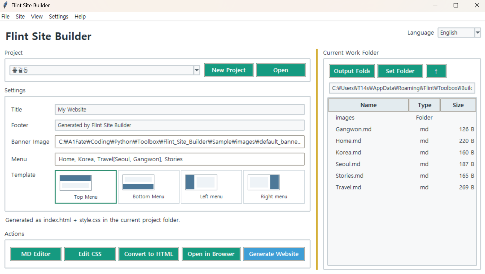

Flint Site Builder
Version: 1.0.0
A GUI-based site builder for creating static HTML websites from Markdown documents.
It keeps the original Markdown files unchanged while allowing you to configure menus, banners, designs, and CSS, then generate the finished site in a separate output folder. Markdown documents that are not part of the top, bottom, left, or right menu layouts can also be converted into standalone HTML documents using the HTML Conversion feature.
How to Use
- Create a new project or open an existing one.
- Link Markdown documents in the working folder to the menu.
- Configure the menu, banner, and template design.
- Check the preview, then run
Generate Site.
Menu Structure
Separate regular menu items with commas and place subcategories inside [].
Home, Korea, Travel[Seoul, Gangwon-do], StoriesEach menu item can be linked to a Markdown document or an email address.
Template Designs
There are four HTML layout structures: top, bottom, left, and right menu layouts. Each layout provides three designs:
Default: Standard designUnlimited Banner: A design that uses a wider bannerMenu Jump: A design that uses a button to jump to the menu instead of a sticky menu
The four HTML structures remain unchanged, while the visual designs are applied through CSS, providing a total of 12 built-in designs.
Markdown Links
Markdown documents can be linked to each other using standard .md links.
[Seoul](Seoul.md)When generating a site or converting Markdown to HTML, local .md links are automatically converted to .html links. External URLs, email links, image links, and other links are left unchanged.
HTML Conversion
Markdown documents that are not part of the top, bottom, left, or right menu-based site structure can be converted separately using the HTML Conversion feature.
When you select a folder, .md files are converted to .html, while other files are copied as-is. If Include Subfolders is enabled, the original folder structure is preserved.
Editing and Preview
Markdown and CSS can be edited directly within the program. Both GUI-rendered previews and actual browser previews are supported.
Key Features
- Generate static HTML websites from Markdown
- Save and load projects
- Four HTML layouts: top, bottom, left, and right menu
- 12 designs using Default, Unlimited Banner, and Menu Jump
- Menu and subcategory configuration
- Banner image and text settings
- Built-in Markdown and CSS editing
- Automatic Markdown link conversion from
.mdto.html - Batch HTML conversion for standalone Markdown documents
- Preserve folder structures and copy regular files
- GUI and browser previews
- Korean and English UI
- Built-in Sample files with preservation of existing Samples
Running from Source
Install the required package:
pip install markdownRun:
python builder.py
Note:If you are using the executable (EXE) version, you do not need to install the required package or run the Python command.
Command-Line Conversion
You can also batch-convert Markdown documents in a folder to HTML without launching the GUI.
builder.py <folder>
builder.py C:\Docs /s
builder.py C:\Docs -o web
builder.py C:\Docs --keep/s: Include subfolders-o: Specify the output folder--keep: Do not convert.mdlinks to.html
If no arguments are provided, the GUI is launched.